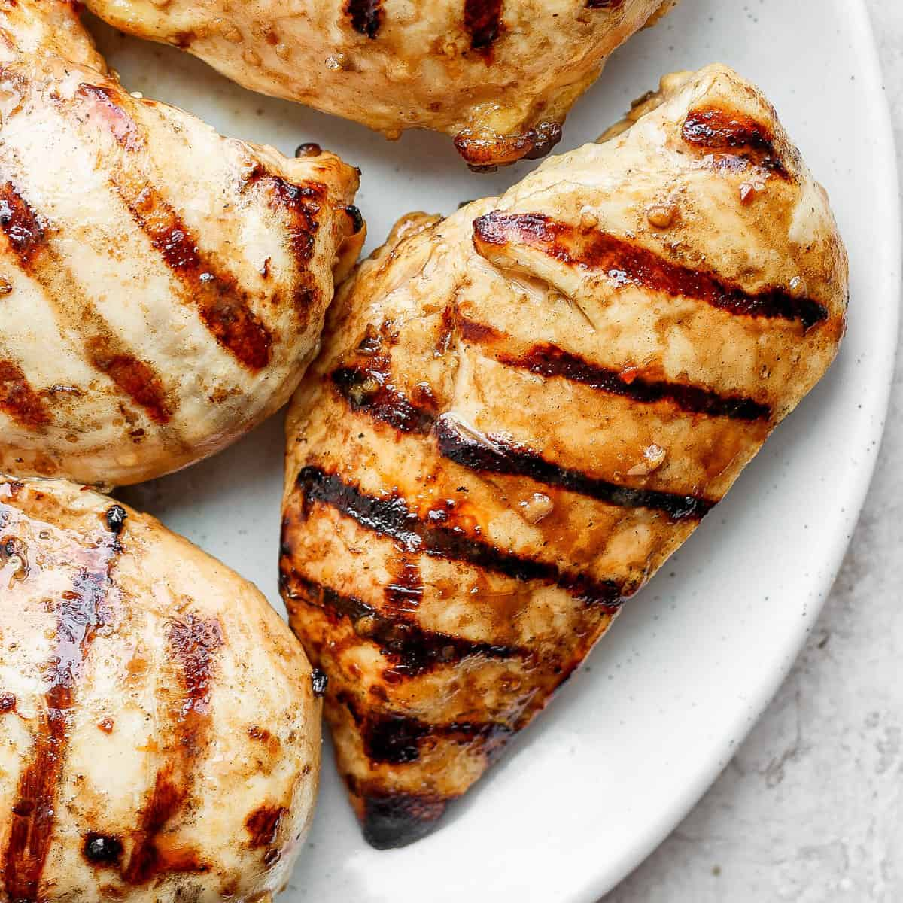

Grilled Chicken w/Mayo Marinade

Description
This marinade is based off of Ethan Cheblowski's chicken.
Ingredients:
- Mayo
- Black Pepper
- Oregano
- Garlic Salt
- Red Pepper Chili Flake
Steps:
- Get 4 heaping tablespoons of mayo, add to a medium sized bowl.
- Add black pepper to taste.
- Add a tablespoon of oreagno.
- Add a teaspoon of garlic salt.
- Add your preffered amount of chili flakes.
- Mix in a bowl, apply to chicken breasts (2-4).
- Throw on top of grill, cook for 6-9 minutes on each side depending on size.
- Serve with your choice of vegetables.